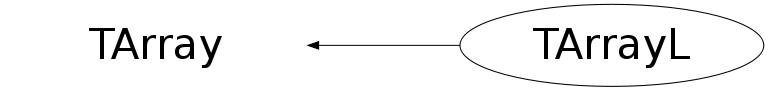

Function Members (Methods)
public:
| TArrayL() | |
| TArrayL(Int_t n) | |
| TArrayL(const TArrayL& array) | |
| TArrayL(Int_t n, const Long_t* array) | |
| virtual | ~TArrayL() |
| void | AddAt(Long_t c, Int_t i) |
| void | Adopt(Int_t n, Long_t* array) |
| Long_t | At(Int_t i) const |
| static TClass* | Class() |
| void | Copy(TArrayL& array) const |
| const Long_t* | GetArray() const |
| Long_t* | GetArray() |
| virtual Double_t | GetAt(Int_t i) const |
| Int_t | TArray::GetSize() const |
| Stat_t | GetSum() const |
| virtual TClass* | IsA() const |
| TArrayL& | operator=(const TArrayL& rhs) |
| Long_t& | operator[](Int_t i) |
| Long_t | operator[](Int_t i) const |
| static TArray* | TArray::ReadArray(TBuffer& b, const TClass* clReq) |
| void | Reset() |
| void | Reset(Long_t val) |
| virtual void | Set(Int_t n) |
| void | Set(Int_t n, const Long_t* array) |
| virtual void | SetAt(Double_t v, Int_t i) |
| virtual void | ShowMembers(TMemberInspector& insp) |
| virtual void | Streamer(TBuffer& b) |
| void | StreamerNVirtual(TBuffer& b) |
| static void | TArray::WriteArray(TBuffer& b, const TArray* a) |
protected:
| Bool_t | TArray::BoundsOk(const char* where, Int_t at) const |
| Bool_t | TArray::OutOfBoundsError(const char* where, Int_t i) const |
Data Members
public:
| Long_t* | fArray | [fN] Array of fN longs |
| Int_t | TArray::fN | Number of array elements |
Class Charts
{kind=link}
{kind=link}
{kind=link}
{kind=link}

Function documentation
Long_t & operator[](Int_t i)
Long_t operator[](Int_t i) const